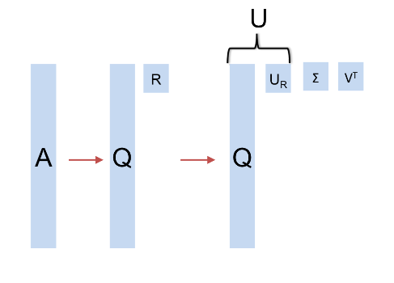

Paralel Lineer Cebir Temeli
Satırsal $A^TA$
[5]'te tek makinalı ortamda matris çarpımının nasıl yapılacağını, ve nasıl görülecebileğini anlattık. Satır bakış açısı, kolon bakış açısı işlendi. Peki parallel bir ortamda hangi matematik bizi ilgilendirmeli? Mesela $A^TA$'yi ele alalım. Bu çarpım oldukça önemli çünkü başka sonuçlar için de kullanılabiliyor, Eşsiz Değer Ayrıştırması (Singular Value Decomposition -SVD-) bunlardan biri.
Büyük Veri ve paralel işlem bağlamında $A^TA$'nin önemli şurada; eğer $A$ matrisi "uzun boylu ve zayıf" ise, yani çok miktarda satırı ama az miktarda kolonu var ise, $m \times d$ diyelim, $A^TA$ çarpımı bize $d \times d$ boyutunda ufak bir matris verir. Eğer SVD hesabını bu matris üzerinden yapabilirsek, işimizi kolaylaştırmış oluruz.
Satırsal olarak $A^TA$ hesabı yapmak için satır satır gezerken her satırın kendisi ile dışsal çarpımını (outer product) alıp sonuçları toplamak yeterli [9]. İşlemi daha sözel tarif eden bir açıklama [3]'de bulunabilir.
$A^TA$ ve SVD
$A^TA$ açılımını yapalım [7], bir $A$ için SVD ayrıştırması
$$ A = U \Sigma V^T $$
olduğuna göre
$$ A^TA = (U \Sigma V^T)^T U \Sigma V^T $$
olacaktır, devam edersek,
$$ = V \Sigma U^T U \Sigma V^T $$
$U^T U = I$ olduğu için geri kalanlar
$$ A^TA = V \Sigma^2 V^T $$
Peki eşitliğin sağından $V$'yi nasıl çıkartırız? Bir dikgen matris çarpı köşegen bir matris çarpı o dikgen matrisin devriği bize bir şeyi hatırlatıyor mu? Evet, bu bir özdeğer / özvektör hesabına benziyor, [2]'de görüldüğü gibi $A=S\Lambda S^{-1}$ ayrıştırması da var (birimdik matrislerde tersi alma işleminin devrik ile aynı şey olduğunu unutmayalım). O zaman $A^TA$'nin öz hesabını yaparsak oradaki özvektör bize $V$ matrisini verecektir.
$U$'yi elde etmek için basit matris çarpımları yeterli,
$$ A = U \Sigma V^T \to U = A V \Sigma^{-1} $$
Yani $V$ elde edildikten sonra onunla $A$'yi çarpıyoruz, sonra $\Sigma^{-1}$ ile. $A$ ne kadar büyük olursa olsun onu bir vektör $V$ ile çarpmak hızlı işler, $\Sigma$ ise köşegen, seyrek bir matristir, onun çarpımı da basittir.
Bu işlemlerin paralel versiyonları için [8, 6] kaynaklarına bakılabilir.
SVD ve öz hesapların benzerliği için alttaki koda bakılabilir,
import numpy.linalg as lin
import pandas as pd
k = 7 # izdusum uzayinin boyutlari
df = pd.read_csv("../linear_app10rndsvd/w1.dat",sep=';',header=None)
A = np.array(df)[:,1:]
print (A.shape)
(71, 30)
ATA = np.dot(A.T,A)
eval,evec = lin.eig(ATA)
u,s,v = lin.svd(A)
print (evec.shape)
print (v.shape)
(30, 30)
(30, 30)
Matrisler birbirine değersel olarak ne kadar yakın, kontrol edelim,
print ( np.mean(np.abs(evec) - np.abs(v.T)))
0.005230468666628483
-2.7259159635502234e-13
Fark çok ufak (abs ile mutlak değer kullandık çünkü bazen tüm bir kolon
diğerinin eksi hali olabiliyor).
SVD İçin QR
QR ile SVD yapmak mumkundur. QR ayrıştırması [4] kolonların hepsi bilindiği gibi birbirine dik (orthogonal) birim vektörler olan bir $Q$ matrisi ve üst üçgensel (upper triangular) bir $R$ matrisi oluşturur. Ayrıştırmanın $A^TA$ ile bağlantısı nedir? Eğer $A$ yerine onun ayrıştırmasını $QR$ koyarsak,
$$ C = A^TA = (QR)^T (QR) = R^T Q^T QR $$
Tum $Q$ vektorleri birbirine dik, ve birim vektorler ise, $Q^T Q$ birim matrisi $I$ olur. O zaman
$$ C = R^T Q^T QR = R^T R $$
Yani
$$ C = R^TR $$
Peki $A^TA$ hesaplayıp (böylece $R^TR$'yi elde edince) onun içinden $R$'yi nasıl çekip çıkartırız? Şimdi Cholesky ayrıştırması kullanmanın zamanı. Cholesky ayrıştırması (herhangi bir simetrik pozitif kesin $C$ matrisi üzerinde)
$$C = LL^T$$
olarak bilinir, yani bir matris alt üçgensel (lower triangular -ki L harfi oradan geliyor-) $L$ matrisine ve onun devriği olan üst üçgensel $L^T$'nin çarpımına ayrıştırılır. Elimizde $R^TR$ var, ve ona benzer $LL^T$ var, $R$ bilindiği gibi üst üçgensel, $L$ alt üçgensel, $L^T$ ve $R$ birbirine eşit demek ki. Yani $A^TA$ üzerinde sayısal hesap kütüphenimzin Cholesky çağrısı kullanmak bize $QR$'in $R$'sini verir.
Şu anda akla şu soru gelebilir: madem kütüphane çağrısı yaptık, niye $A$ üzerinde kütüphenimizin $QR$ çağrısını kullanmıyoruz?
Cevap Büyük Veri argümanında saklı. Bu ortamda uğraşılan verilerde $A$ matrisi $m \times n$ boyutlarındadır, ve $m$ milyonlar, hatta milyarlarca satır olabilir. Şimdilik $m >> n$ olduğunu farzedelim, yani $m$, $n$'den "çok, çok büyük", yani "boyut kolonlarının", ki $n$, sayısı binler ya da onbinlerde. Bu gayet tipik bir senaryo aslında, ölçüm noktaları (boyutlar) var, ama çok fazla değil, diğer yandan o ölçümler için milyonlarca veri noktası toplanmış. Tipik bir aşırı belirtilmiş (överdetermined) sistem - ki en az kareler (least squares) gibi yaklaşımların temel aldığı sistemler bunlardır, eldeki denklem sayısından daha fazla ölçüm noktası vardır. Bu arada en az karelerden bahsettik, $QR$'in kullanıldığı alanlardan biri en az karelerin çözümüdür.
Argümana devam ediyoruz, kütüphane qr çağrısını $A$ üzerinde yaparsak, $m
\times n$ gibi devasa bir matris üzerinde işlem yapmak gerekir. Ama $A^TA$
üzerinde işlem (Cholesky) yaparsak, ki bu çarpımın boyutu $n \times m \cdot m
\times n = n \times n$, yani çok daha ufak bir matristir. $A^TA$'in işlem bedeli
çok ufak, birazdan anlatacağımız yöntem sayesinde bu bedel $O(m)$.
SVD
Simdi $QR$ sonuçlarını kullanarak SVD hesaplamaya gelelim. SVD bize ne verir?
$$ A = U \Sigma V^T $$
$U$ ve $V^T$ dikgen (orthogonal) matrislerdir, $\Sigma$ sadece köşegeni boyunca değerleri olan bir matristir. Daha fazla detay için bkz [4]. Şimdi $A = QR$ yerine koyalım,
$$ QR = U \Sigma V^T $$
$$ R = Q^T U \Sigma V^T $$
Bu son formüledeki $Q^TU$ ibaresi, iki dikgen matrisin çarpımıdır. Lineer Cebir kurallarına göre iki dikgen matrisin çarpımı bir diğer ortogonal matristir. Bu yeni dikgen matrise $U_R$ adı verelim, o zaman
$$ R = U_R \Sigma V^T $$
Bu son formül bize bir şeyler söylüyor. $R$'nin SVD üzerinden ayrıştırılabileceğini söylüyor ve bu ayrıştırma sonrası ele geçen $U_R,V^T$ ve $\Sigma$ köşegen matrisleridir! Bu çok önemli bir sonuç. Bu ayrıştırmanın sonucu $A$'nin ki ile birbirine çok benziyor, tek fark $U$ ile $U_R$. Bu iki matris arasındaki geçiş şöyle:
$$ U_R = Q^T U $$
$$ U = QU_R $$

Bu demektir ki eğer $R$ üzerinde kütüphanemizin svd çağrısını
kullanırsak (ki $R$ nispeten ufak olduğu için bu ucuz olur) ele geçen $U_R$'i
alıp, $Q$ ile çarparsak, $A$ ayrıştırmasının $U$'sunu elde ederiz! $Q$ ile
paralel yapılabilir.
Tekrar paylaşmak gerekirse paralelleştirme teknikleri [6,8] yazılarında.
Kaynaklar
[1] Benson, A., Tall-and-skinny Matrix Computations in MapReduce
[2] Bayramlı, Lineer Cebir Ders 22, https://burakbayramli.github.io/dersblog/linear/linear_22/ders_22.html
[3] Bayramlı, https://burakbayramli.github.io/dersblog/sk/2022/11/paralel-lineer-cebir.html
[4] Bayramlı, Lineer Cebir, Ders 29
[5] Bayramlı, Lineer Cebir, Matris Çarpımı, Ders 1
[7] Zadeh, CME 323: Distributed Algorithms and Optimization, Lecture 17, https://stanford.edu/~rezab/classes/cme323/S17/
[8] Bayramlı, Paralel Lineer Cebir, https://burakbayramli.github.io/dersblog/sk/2022/11/paralel-lineer-cebir.html
[9] Gundersen, Matrix Multiplication as the Sum of Outer Products, https://gregorygundersen.com/blog/2020/07/17/matmul/
Yukarı